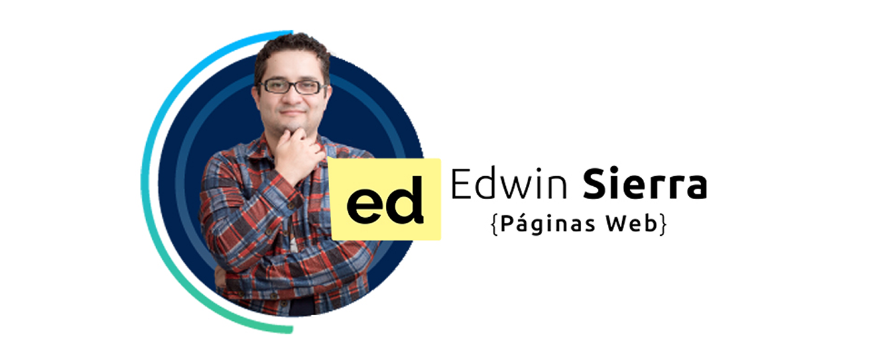

Mi nombre es Edwin Sierra y actualmente me dedico a
implementar sitios web en WordPress. Al mismo tiempo, estoy tomando un
curso de desarrollo web donde estoy aprendiendo HTML y CSS desde cero

¿QUIEN SOY?
Soy una persona apasionada por el mundo digital. Me gusta construir
soluciones web que sean útiles, bien diseñadas y accesibles. Gracias
a mi experiencia en WordPress he podido trabajar con clientes
reales, pero ahora quiero complementar eso con conocimientos
técnicos más profundos.
MIS INTERESES
Me interesan el diseño web, la experiencia del usuario, el
posicionamiento en buscadores (SEO) y la automatización de procesos
para mejorar sitios. Me encanta aprender cosas nuevas y estar en
constante evolución dentro del mundo digital.
MIS METAS
Quiero seguir creciendo como profesional del desarrollo web,
combinando la facilidad y potencia de WordPress con el conocimiento
profundo de las tecnologías base como HTML, CSS y luego JavaScript.
Esta página es parte de ese proceso y mi objetivo es que, en poco
tiempo, pueda convertirla en mi web profesional en producción.
Este es solo el comienzo de mi camino en el mundo del desarrollo web,
y estoy muy emocionado por todo lo que viene.